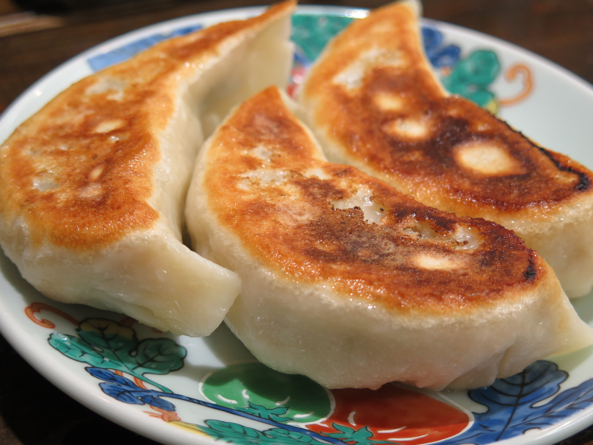

Gyoza
Home

Gyoza are Japanese dumplings inspired by Chinese jiaozi, known for their
delicate wrappers and flavorful fillings. Typically, gyoza are filled with
a mixture of ground meat, such as pork or chicken, finely chopped
vegetables like cabbage and garlic chives, and seasonings including soy
sauce, ginger, and garlic. They can be pan-fried, steamed, or boiled,
resulting in a crispy bottom and tender top when cooked traditionally.
These dumplings are not only delicious but also versatile, often served as
an appetizer, side dish, or main course. The process of making gyoza
allows for creativity in fillings and cooking methods, and they are
commonly enjoyed with a dipping sauce made from soy sauce, rice vinegar,
and a touch of chili oil. Gyoza offer a satisfying combination of texture
and flavor, making them a beloved snack in Japanese cuisine and beyond.
Ingredients
- 200 g ground pork or chicken
- 1 cup finely chopped cabbage
- 2 green onions, finely chopped
- 1 clove garlic, minced
- 1 teaspoon grated ginger
- 2 tablespoons soy sauce
- 1 tablespoon sesame oil
- 1/2 teaspoon salt
- 1/4 teaspoon black pepper
- 20-25 gyoza wrappers
- Vegetable oil, for frying
- 1/4 cup water, for steaming
- Dipping sauce: soy sauce, rice vinegar, chili oil (to taste)
Instructions
-
In a bowl, combine ground meat, chopped cabbage, green onions, garlic,
ginger, soy sauce, sesame oil, salt, and pepper. Mix well to form the
filling.
-
Place a small spoonful of filling in the center of a gyoza wrapper.
-
Moisten the edge of the wrapper with water, fold it over the filling,
and press to seal, creating pleats along the edge.
-
Heat a non-stick skillet over medium heat and add a little vegetable
oil.
-
Place gyoza in the skillet, flat side down, and cook until the bottoms
are golden brown.
-
Add water to the skillet (enough to cover about 1/4 of the gyoza
height), cover with a lid, and steam for 4-5 minutes until the filling
is cooked through.
-
Remove the lid and cook for another 1-2 minutes to evaporate remaining
water and crisp the bottoms.
-
Serve hot with dipping sauce made from soy sauce, rice vinegar, and
chili oil.